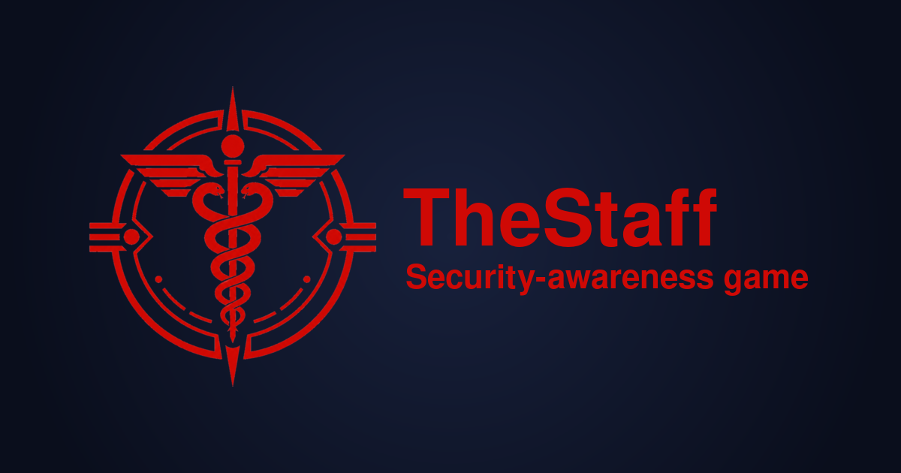

🛰️
Discover & map
nmap scans the event LAN on a schedule and draws each device as a live card around a central hub.

A consent-based, educational security-awareness game for dev/maker events. Map every guest device, find the weak spots, and verify the fixes — together.
⚠️ For authorized, consent-based security-awareness events only.
nmap scans the event LAN on a schedule and draws each device as a live card around a central hub.
Open ports → services → likely CVEs with CVSS, plain-language summaries, fix steps and copy-paste detection-only tests.
Per-CVE chat (your Claude or OpenAI key) that explains the finding and helps you verify it's no longer exploitable.
Mask device IPs on the diagram and in AI messages — safe to show on a shared screen.
./scripts/dev.sh
cd frontend && npm install && npm run devthen open http://localhost:5173/dashboard ← the live dashboard
cp .env.example .env
sed -i "s|^THESTAFF_ADMIN_TOKEN=.*|THESTAFF_ADMIN_TOKEN=$(openssl rand -hex 24)|" .env
sudo ./start.shthen open http://<host-ip>:8000 ← dashboard on the event box
The generated token is required; paste the same value into ⚙ Settings → Operator token. Rebuild later with sudo ./update.sh.
Shown in privacy mode on the built-in demo network — IPs masked to 192.168.x.x.
A secret you generate gates every mutating/active action (scan, accept, healthcheck, wipe, AI). It lives in a gitignored .env; start.sh/update.sh require it. Paste the same value into ⚙ Settings → Operator token.
openssl rand -hex 24Add a Claude or OpenAI key in Settings — it's stored only in your browser and proxied per request (never saved on the server). Click Discover models, pick a default, and an Ask AI button appears on each CVE.
Toggle it to mask IPs on the diagram and in messages sent to the AI — so a guest's address isn't shown on a shared screen or sent to a third-party model.